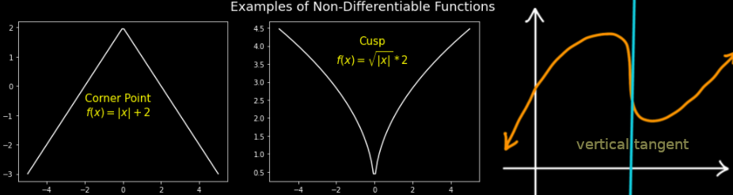
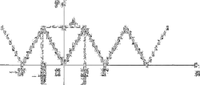

Punti di non derivabilità: angolosi, cuspidi, flessi a tangente verticale
Se una funzione f è derivabile in un punto x0, nel punto di coordinate (x0, f(x0)) il grafico ha una retta tangente ben definita. Esaminiamo ora, con alcuni esempi, cosa succede quando f non è derivabile in un punto.
Punti angolosi
Sia f(x) = |x|. Essendo f(x) = x per x > 0 e f(x) = −x per x < 0, si ha f'(x) = +1 se x > 0 e f'(x) = −1 per
x < 0, avendo f' il significato di coefficiente angolare.
Nell'origine x = 0, occorre usare la definizione. Ora
e quindi, se h+, |h| = h e il limite del rapporto incrementale è 1, mentre se h → 0−1, |h| = −h e il limite è −1.
Si conclude che, non esistendo il limite del rapporto incrementale, f non è derivabile in x = 0. D'altra parte, ricordando il grafico di f(x) = |x| si vede che la tangente nell'origine non è ben definita.
Tuttavia i limiti destro e sinistro del rapporto incrementale di |x| esistono finiti e in (0,0) il grafico presenta "un angolo". La circostanza merita una definizione.
Definizione 5.3.1. Derivata destra e sinistra. Sia f: (a,b) ⟶ ℝ. Se esiste finito il limite
allora f si dice derivabile dalla destra (oppure dalla sinistra); il limite si chiama derivata destra (oppure sinistra) e si indica con il simbolo f'+(x0) (oppure f'−(x0)). □
We know from theorem Theorem 4.1.8 that a limit exists, if and only if both the limits, the left hand and the right hand, exist and are equal. Then as in the case of one-sided continuity, the right derivative of f at x and the left-derivative at x, are defined to be the limits
Nel caso in cui f sia continua e derivabile da destra e da sinistra (ma non derivabile) in x0 si dice che f ha un punto angoloso in x = x0. Dunque |x| ha un punto angoloso in x = 0.
Vale la pena ricordare la formula che esprime sinteticamente la derivata della funzione valore assoluto (fuori dall'origine):
Punti a tangente verticale. Cuspidi
Se f è continua in un punti x0 e
f non è derivabile in x0 ma, geometricamente, il grafico di f ha una retta tangente ben definita e parallela all'asse delle ordinate. Ammetteremo in tal caso la scrittura f'(x0) = ±∞ e parleremo di flesso a tangente verticale. Il concetto di flesso sarà definito più in generale in seguito.

Ad es., la funzione f(x) = ∛|x|, il cui grafico è riportato in fig.1. In questo caso si ha f'+(0) = +∞, f'−(0) = −∞ e si dice che in x = 0, f ha una cuspide.
Definizione 5.3.1 Se f è continua in x0 e f'+(x0) = ±∞, f'+(x0) = ∓∞, si dice che f ha in x0 una cuspide. □

Esempio 5.3.2 Consideriamo la funzine f(x) = √|x|, x ∈ ℝ. Come si intuisce dalla fig., il grafico di f non ammette retta tangente nell'origine.
Si ha infatti
cioè f'+(x0) = +∞, e già questo basta a escludere che la funzione sia derivabile (anche solo a destra) in x0). Osserviamo inoltre che
cioè f'−(x0) = −∞. (Nel primo passaggio abbiamo usato il fatto che h = −|h| quando h < 0). ■
Nel caso misto in cui una delle due derivate è finita e l'altra infinita (con f continua) si parla ancora di punto angoloso.
Infine, se la funzione è definita solo per x ≥ x0 e in tal punto ha derivata (destra) infinita, diremo semplicemente che in tal punto ha tangente verticale, senza parlare né di cuspide né di flesso. Ad es. la funzione √x ha un punto a tangente verticale in x = 0.
Esempio 5.3.3 Si consideri la funzione
f(x) = |x3 − 2|
Abbiamo chiaramente
Quindi
f non è derivabile in x0 ma, geometricamente, il grafico di f ha una retta tangente ben definita e parallela all'asse delle ordinate. Ammetteremo in tal caso la scrittura f'(x0) = ±∞ e parleremo di flesso a tangente verticale. Il concetto di flesso sarà definito più in generale in seguito.
Ad es., la funzione f(x) = ∛|x|, il cui grafico è riportato in fig.1. In questo caso si ha f'+(0) = +∞, f'−(0) = −∞ e si dice che in x = 0, f ha una cuspide.
Definizione 5.3.1 Se f è continua in x0 e f'+(x0) = ±∞, f'+(x0) = ∓∞, si dice che f ha in x0 una cuspide. □
Nel caso misto in cui una delle due derivate è finita e l'altra infinita (con f continua) si parla ancora di punto angoloso.
Infine, se la funzione è definita solo per x ≥ x0 e in tal punto ha derivata (destra) infinita, diremo semplicemente che in tal punto ha tangente verticale, senza parlare né di cuspide né di flesso. Ad es. la funzione √x ha un punto a tangente verticale in x = 0.
Continuità e derivabilità
Vale il seguente semplice ma importante.
Definizione 5.3.2 Se f è derivabile in un punto x0 allora f è continua in x0.
Dim.. Scriviamo
I calcoli mostrano che f'(2) non esiste. Inftti, abbiamo derivate destre e sinistre
<<<<<<< HEADCome conseguenza, se una funzione è discontinua in x0, non può essere derivabile in x0.
Viceversa, se f è continua in x0 come mostra
Come conseguenza, se una funzione è discontinua in x0, non può essere derivabile in x0.
Viceversa, se f è continua in x0, non necessariamente f è derivabile in x0 come mostra f(x) = |x| che è continua in x = 0 ma non ivi derivabile.
f'−(2) = −12 and f'+(2) = 12
Quindi in x = 2 si ha un punto angoloso. ■
Continuità e derivabilità
Vale il seguente semplice ma importante.
Definizione 5.3.4 Se f è derivabile in un punto x0 allora f è continua in x0.
Dim. Dato che f è derivabile in x0, f'(x0) esiste ed è data da
La continuità di f in x0 implica che limh ⟶ 0 f(x) = f(x0) o, equivalentemente
limh ⟶ 0 f(x) − f(x0) = 0
Che espressa nella variabilie h = x − x0, moltiplicando e dividendo per h dà
quindi limh ⟶ 0 f(x) = f(x0) e f è continua in x0. □
Come conseguenza, se una funzione è discontinua in x0, non può essere derivabile in x0.
Viceversa, se f è continua in x0, non necessariamente f è derivabile in x0 come mostra f(x) = |x| che è continua in x = 0 ma non ivi derivabile.
Example 5.3.2. The derivative of a function f at x0 exists if and only if both the left-hand derivative at x0 and the rigt-hand derivative at x0 exists and are equal. If f is differentiable at x0, then f is continuous at x0. In order to show that a function f is not differentiable at x0, we can show that the function f is not continuous at x0, or alternatevely that the left/right-hand derivative at x0 do not exist.
For example, the piecewise defined function
is defined on the interval (−∞, ∞). It is continuous on the intervals (−∞, 0) and (0, ∞), but it is not continuous at x = 0, since
limx⟶0− y(x) = 2 ≠ −1 = limx⟶0+ y(x)
Because y(x) is not continuous at x = 0, the function y(x) is not differentiable at x = 0; however, y(x) is differentiable on (−∞, 0) and (0, ∞). In fact,
■
Onda quadra
Consideriamo la funzione f periodica di periodo T che coincide con 2A|x|/T nell'intervallo [−T/2, T/2]
Una funzione di questo genere modelliza un'onda o segnale triangolare di ampiezza A. Questa funzione presenta punti angolosi in x = ± T/2, ±T, ±3T/2 ecc.
La sua derivata non è definita in questi punti ed è costante a tratti; precisamente, vale 2A/T per 0 < x < T/2, vale −2A/T per T/2 < x < T e si ripete con periodicità T, con un grafico illustrato nella fig. sottostante.
La derivata del segnale triangolare di ampiezza 2A/T rapprsenta quella che si chiama onda quadra.